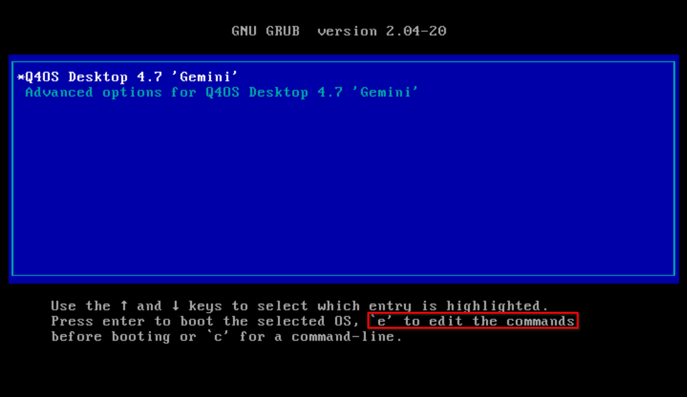
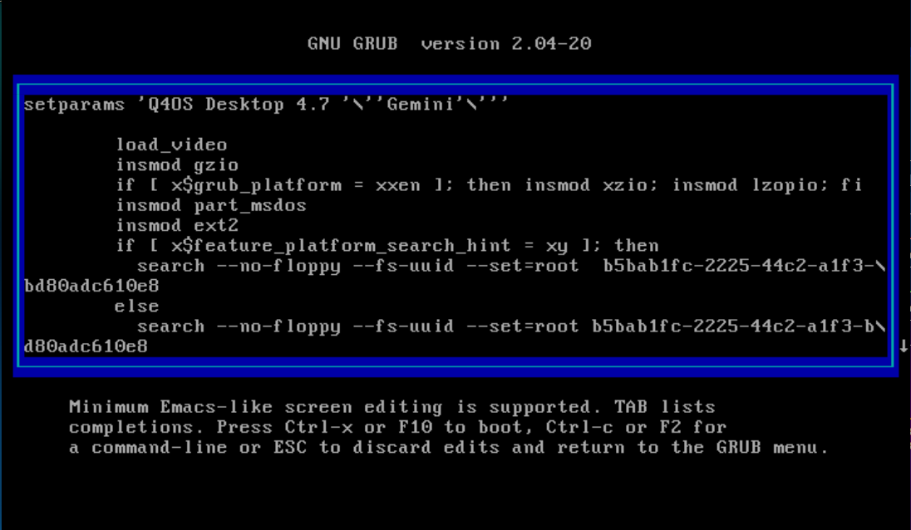
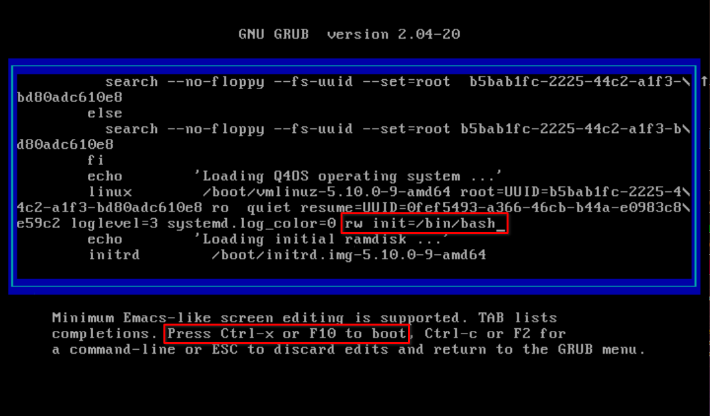
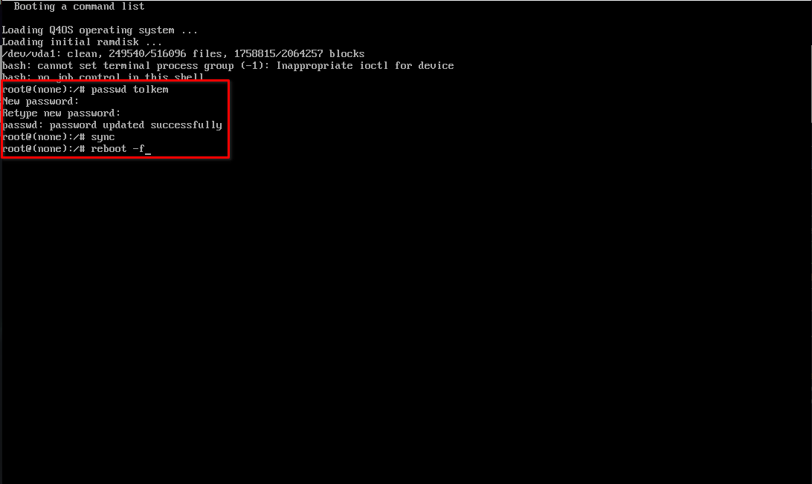
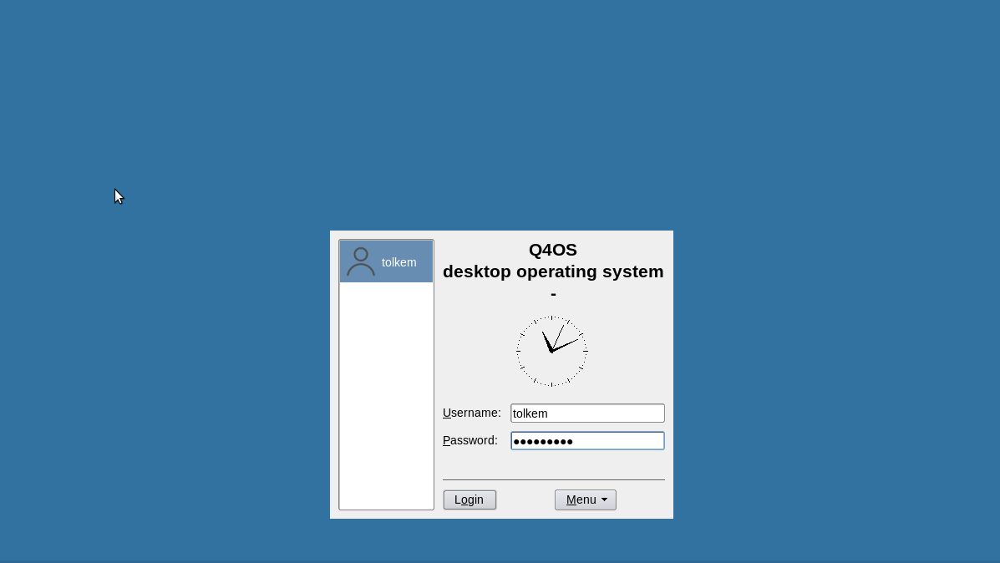
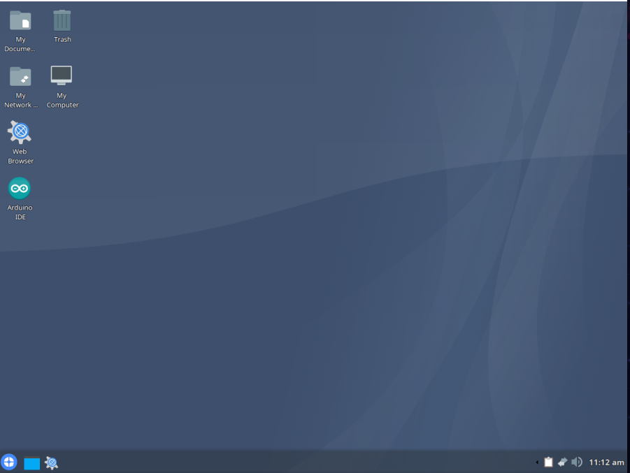

How to recover/restore forgotten/lost password(without booting to
a Live USB)
In the unfortunate event that you somehow
lost/forgot your Q4OS username's password, that is, the password
you use to log in to your system as well as execute sudo
commands in the terminal, here's a method you can use to
restore/recover it without having to download a new .iso(in case
you don't have it at hand at the moment), create a Live media,
change your pc's BIOS settings so it boots to the USB stick, mount
partitions and chroot, a process that can be quite tedious
for such a simple task, instead, you just need to boot to your
Q4OS installation, edit grub and add a single line, type
in a few (3) easy commands, reboot and log in with your new
password. For that purpose, just follow these instructions:
1. Turn on your pc, and when Q4OS starts booting press the shift
key, so you can access the grub console

2. You may have noticed the highlighted
line in the img above, well do as it says and press
e to edit boot options, you should see this

3. Scroll down using the arrows keys, and right after where it reads
status=1 add the following rw init=/bin/bash so it
looks like this

4. Hit Ctrl + x to save the changes and boot to a command
line console. Now, type passwd followed by your username,
and press Enter, for example, I did passwd tolkem.
You'll be prompted to type in, and confirm your new password. Once
the password has been updated/restored successfully, type in sync
and press Enter, then type in reboot -f, and press Enter
again.

At this point, Q4OS should start normally, and you should be able to
log in with your new password in TDM, like I did


Well, that's it. Pretty easy, isn't it? Now you know how to
recover/restore your lost/forgotten password without having to boot
to a Live USB, mount partitions, chroot and all that. :-)
NOTE: In step 3, it reads "Scroll down using the arrows keys,
and right after where it reads status=1, add the following rw
init=/bin/bash", however, you may or may not have noticed that
in the next image in step 4 that line is actually right
after log_color=0, thing is, that key for "=" doesn't
work in my keyboard if using an English layout, like in grub.
I had to delete the status=1 line, and reuse the "="
symbol, but I think it should still work. I just wanted to mention
that, so you don't get confused. :-)